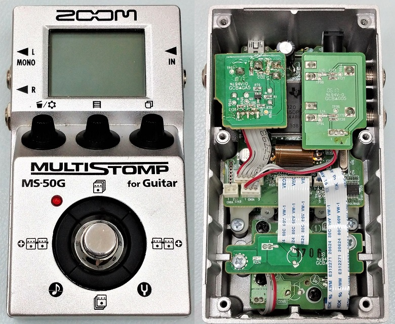
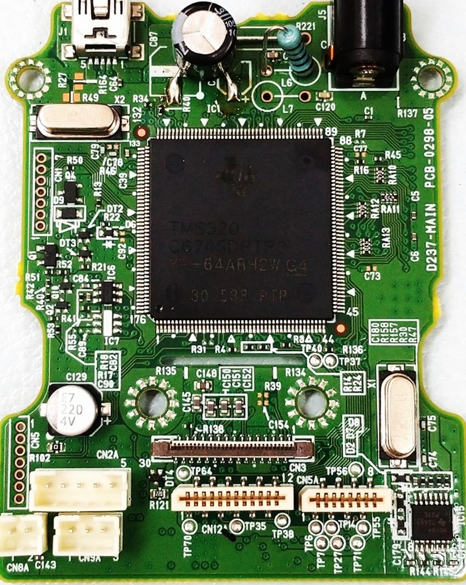
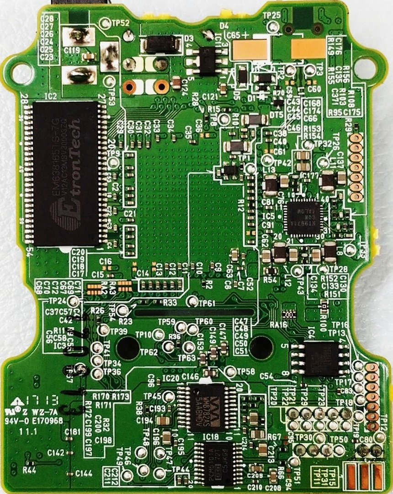
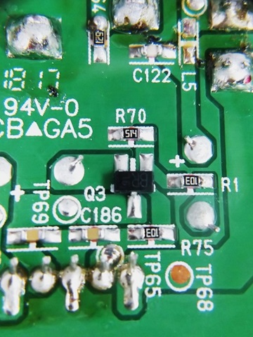
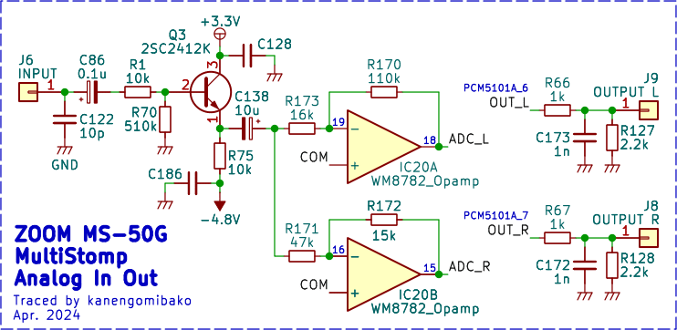
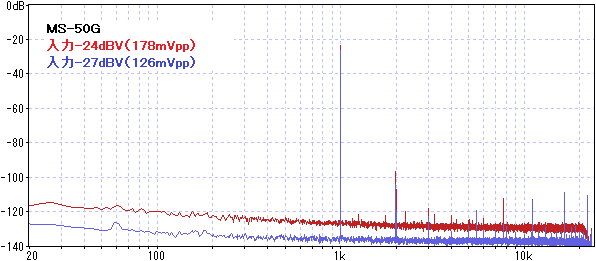
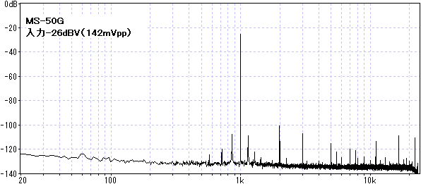
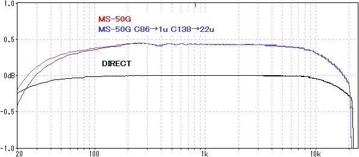
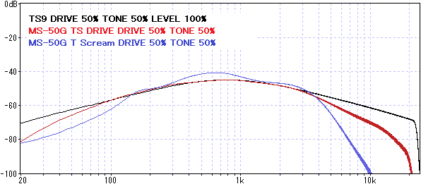

ZOOM MS-50G MultiStomp 分解・特性測定
2024年05月05日 カテゴリー：修理・改造・解析

2023年11月にZOOM MS-50G+が発売されましたが、旧機種のMS-50Gについて調べていなかったため、分解してみることにしました。
▽基板画像

＜主なIC＞
DSP：TMS320C6745（ZOOM ZFX-IV）
DRAM：EM638165TS-7G
フラッシュメモリ：MX25L3233
電源管理：RT9971
インバータ：SN74HCU04
ADC：WM8782
DAC：PCM5101A
下記ページでMS-70CDRの内部画像等が掲載されており、同様のICが確認できます。
・エフェクタ修理：ZOOM MultiStomp MS-70CDR の音割れ
▽アナログ入出力部 回路図

入力部はトランジスタのバッファです。入力インピーダンスは実測390kΩでした。公式サイトには入力インピーダンス1MΩと記載があるので、仕様変更されたのかもしれません。WM8782は内部にオペアンプがあり、LchとRchでゲイン違いを2つ準備してあります。基本はゲインが高い方にしておき、過大入力時はゲインが低い方に切り替えていると思われます。PCM5101Aはチャージポンプ内蔵で±電源を生成しているため、出力のカップリングコンデンサを省くことができます。推奨負荷インピーダンスが1kΩ以上なので、出力に1kΩ抵抗が挿入されています。ヘッドフォンを接続した場合には大きな音量は出せません。
入力音量によって、SN比が変化するのが確認できました。

入力切り替えの境目あたりの音量（50mVrms）では、1kHzのピークの周りに別のピークが出現しています。プログラム内部のゲイン調整数値と実際のアナログ回路のゲインに誤差があるため、波形の途中にズレ（歪み）が生じていると考えられます。

▽バイパス音 ※±1dBに拡大
（DIRECT：測定に使用しているオーディオインターフェースUR22Cの入出力を直結）

ごくわずかに低音域・高音域がカットされていますが、-0.5dB程度なので基本的には気にする必要はないでしょう。カップリングコンデンサの容量を大きくするとわずかに低音域が改善します。ただ、これ以上改善するように改造するのは無理そうです。レイテンシは、約1.2msでした。
MS-50Gにはチューブスクリーマーのモデリングとされる「T Scream」と「TS Drive」を書き込むことができます。これらのエフェクトの周波数特性をTS9実機と比較しました。

T Screamはなぜか複雑な形となっています。TS DRIVEは似ていますが高音域の減衰が大きいです。TONEの動き方は両方TS9と同じような感じです。
歪み系のエフェクトでは、波形が歪みナイキスト周波数以上の高い周波数領域に倍音成分が発生することがあります。この時、ナイキスト周波数以下の低い周波数領域に折り返しノイズ（エイリアスノイズ）が発生します。高音域の減衰を大きくしてあるのは、エイリアスノイズを防ぐために行っている処理なのかもしれません。